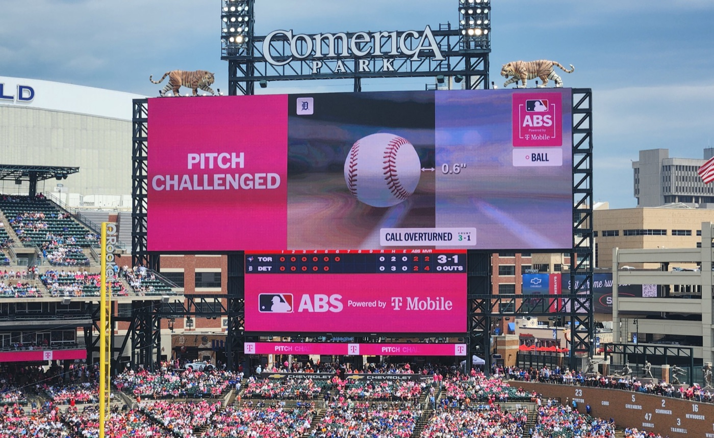
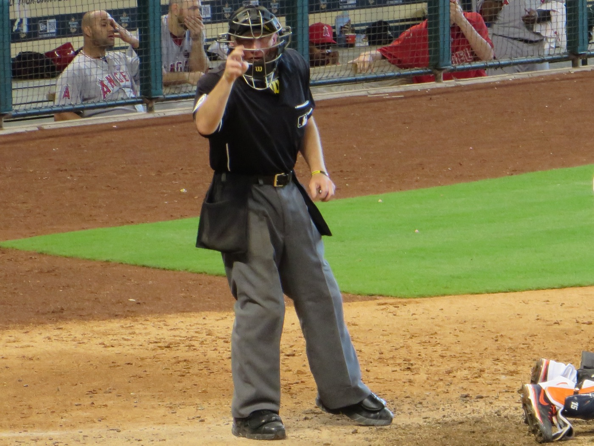
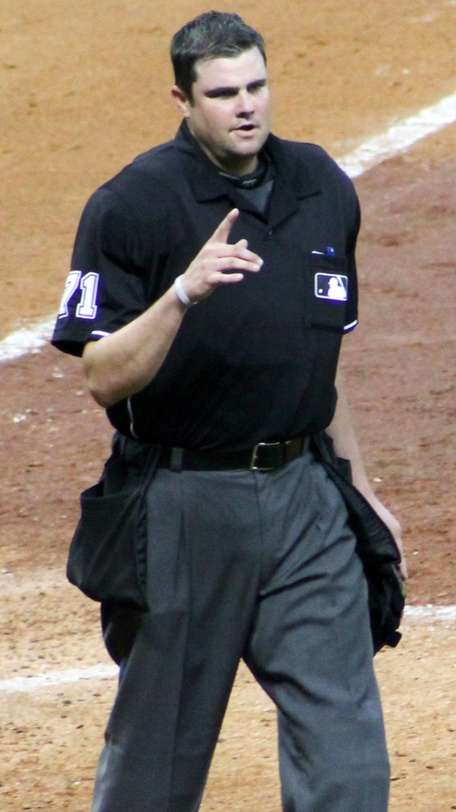
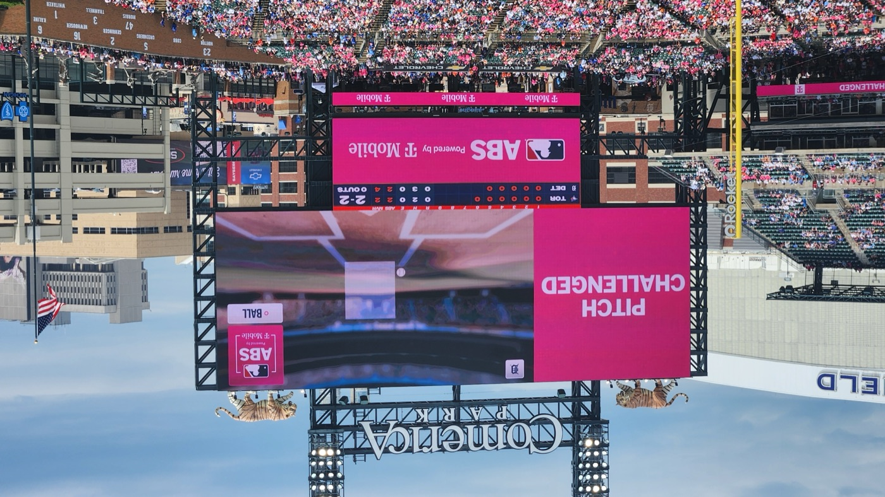

Executive Summary
From the 2026 season, Major League Baseball allows a machine to rule again on balls and strikes. Not on every pitch, though. The umpire calls first, and only if the pitcher, catcher or batter involved in that pitch challenges immediately does the automated system reveal where the ball crossed and issue the final ruling. A joint team from KAIST and Yonsei University measured what happened to human umpires under that arrangement, using twelve seasons of records. This article reads their result as a story about the places where a person judges first and AI reviews a selected few.
The team measured two things separately: where a call flips from ball to strike, and how abruptly that flip happens. Only the first moved in 2026. The abruptness stayed on the trajectory of the eleven prior seasons. Their eye for close pitches had not sharpened; the place where they drew the line had been pulled toward the machine. Right after a call was overturned, the calls near that same edge moved in the corrective direction, but the movement was gone from the opening of the same umpire's next game.
Sections 1 through 5 report what the paper found. The question in Section 6 is ours. When a person labels first and review reaches only a fraction of the work, what changes: the label, or the labeler?
Key figures
Source: Kichang Lee, Gyeongmin Han, Sungmin Lee, JeongGil Ko, When the Strike Zone Becomes Algorithmic, arXiv:2609.25525 (2026-09-22).
53.6%
Overturn rate among challenged calls
4,525 of the 8,447 challenges in 2026 were overturned. More than half of everything that reached review had been wrong
5.03%
Usage rate of available challenges
7,381 challenges out of 146,725 opportunities. The rest stayed unreviewed
1 game
Reach of the post-correction adjustment
Statistically significant inside the same game, undetectable in the opening window of the next one
+36.1%
Rise in tight-side errors on changeups
Every pitch type saw its overall miscalls drop, yet this one cell went the other way. Where the errors fell and where they rose came apart
The umpire calls every pitch; the machine comes when called
If you have not followed baseball closely, that is fine. Start with how the arrangement works. When a batter does not swing, the umpire behind the catcher decides whether the pitch was a strike or a ball. Major League Baseball brought an automated ball-strike system into that decision in 2026, and its design differs from the one the Korea Baseball Organization has used since 2024. In Korea the machine rules on every pitch. In the majors the umpire rules first, and the machine only steps in when the pitcher, catcher or batter involved in that pitch taps a helmet to challenge right after the call. The location measured by camera tracking then appears on the scoreboard, and the original call is either upheld or overturned.

Challenges are rationed. Each team starts with two, keeps the one it spends on a successful challenge and loses it on an unsuccessful one. A team that enters an extra inning with none left receives one. Managers cannot ask, and a request that does not come immediately after the call is not accepted. The zone the machine uses also differs from the one in the rulebook. It is a 17-inch-wide rectangle standing at the midpoint of home plate, with its lower edge at 27% of the batter's measured height and its upper edge at 53.5%.
This design was not an accident. Prior work cited by the paper traces how the league arrived at challenges rather than full automation after seven years of experimentation. Technical feasibility and cost weighed on the choice, along with continuity with established calling practice and a wish to leave players some hold on the call. The decision to invoke review was made part of the game itself.
The volume shows that the arrangement ran without a pause all season. Across the 1,974 games played from Opening Day through August 24, players challenged 8,447 times. That is 4.28 per game, with at least one challenge in 98.7% of games. Of those, 4,525 were overturned, a rate of 53.6%.
The shape of the arrangement becomes visible here. Every pitch a batter leaves alone is the umpire's to judge, yet the signal telling that umpire whether the judgment was right or wrong comes back only on the pitches players choose to send up. The person who judges and the person who asks for a correction are different people, and the final ruling belongs to a third party. The paper calls this a distinctive setting for studying how humans and AI meet.
Did the umpires get sharper, or just move the line?
The material the team worked from is twelve seasons of regular-season ball-strike calls from 2015 through 2026, 4,114,256 of them, made by 141 home-plate umpires. It was assembled from the pitch-tracking records the league publishes and from its public stats API. There is a reason for reaching back that far. What changed in 2026 was not only the challenge arrangement but the definition of the strike zone itself. Without separating the two, nothing can be said about whether a difference in the calls came from the umpires or from the yardstick.

So the team built a fixed reference zone defined by batter height alone, independent of any umpire's call, and placed all twelve seasons on it. The era-specific definitions of the zone were adjusted for separately.
The records themselves needed two repairs. First, the 2026 data keeps only the final ruling for a challenged pitch. For an overturned pitch, what the umpire originally called has effectively been erased from the record, so the team reversed the overturn flag to recover the umpire's first call.
Second, pitch location through 2025 was recorded at the front plane of home plate, while the 2026 coordinates come from the midpoint plane the automated system uses. The same pitch is written down with different coordinates depending on which plane it is measured at, so the eleven earlier seasons were re-propagated along each pitch's trajectory, using velocity and acceleration from the tracking data, to recompute midpoint-plane coordinates. What actually went into estimating the boundaries was not all 4.11 million calls but the 842,456 that fell within three inches of one of the four edges, and extra innings were left out to keep the number of available challenges comparable across games.
Two quantities are measured on that common yardstick. One is the place where an umpire switches from calling ball to calling strike, the boundary position. The other is how abruptly that switch happens, the sharpness of the boundary. The first is a standard about where to draw the line. The second is an ability to tell apart the pitches that land near it.
A forecast built from the 2015 to 2025 trajectory, held against what was actually observed in 2026, sends the two quantities in different directions. Boundary position fell significantly below forecast, inward toward the automated zone, for the zone as a whole and at the bottom, inside and outside edges. Only the top edge stayed inside its predicted range. The largest departures came at the bottom and outside, historically the places where umpires had been most generous with strikes beyond the reference zone. Sharpness, by contrast, stayed within its predicted trend for the whole zone and at all four edges.
"Taken together, these results indicate that umpire calls changed primarily in where the boundary was placed, while the sharpness of that boundary remained consistent with its pre-adoption trajectory." Watched by a machine, the umpires did not begin to see better. They began to call differently.
That distinction is the key to everything that follows. The old habit of letting the zone vary with the count survived 2026 intact, with the ordering from widest at 3-0 to tightest at 0-2 still in place. All four displayed counts, though, fell inward relative to their forecast trends. The 3-0, 0-0 and 3-2 estimates landed beyond their 95% prediction intervals outright, while 0-2 sat near the lower bound. The ordering held while the whole row slid over by one notch.
The reading the paper adds here is worth keeping. Because the counts start from different places, the same amount of inward movement does not produce the same result. At 3-0, a boundary that had sat well outside the reference zone comes closer to it; at 0-2, a boundary already tighter than the reference is pushed further in. Moving a standard all at once is a correction in some situations and the opposite in others.
Something slightly different happened where calls had split by a player's standing. Before 2026, batters with more All-Star selections received a tighter zone. In 2026 the three status groups drew visibly closer together. All three fell below their forecasts, and every departure was significant. The three pitcher groups converged in a similar way, though the evidence there is weaker than for batters. Sharpness did not move here either. The narrowing of status differences also came from moving the line, not from seeing better.
Miscall rates by pitch type confirm that reading once more. All six pitch types show a lower rate in 2026. Once the figure is split by which kind of miscall fell, the picture sharpens.
| Pitch type | Overall miscall rate | Outside pitch called strike | Inside pitch called ball |
|---|---|---|---|
| Four-seam fastball | −26.4% | −40.3% | +0.5% |
| Sinker | −29.0% | −41.5% | −1.3% |
| Curveball | −16.2% | −32.8% | +8.1% |
| Changeup | −28.6% | −50.5% | +36.1% |
Compiled by Pebblous from four of the pitch types in the paper's Table 1. Figures are the relative change in 2026 against the 2015–2025 average; cutters and sliders are omitted for space. The wide-side reduction was statistically significant for all six pitch types (a fall of 32.8% to 50.5%), while on the tight side only the changeup increase was significant
Overall miscall rates fell by between 16.2% for curveballs and 29.0% for sinkers, and almost all of that reduction came from the wide side. Pitches that missed outside the zone were called strikes far less often, for every pitch type. Tight-side miscalls, where a pitch inside the zone is called a ball, went in no common direction. Four-seam fastballs and sliders barely moved; curveballs and changeups rose instead. The changeup went from 13.3% to 18.1%, a rise of 36.1%, and that was the only significant increase.
By pitch type, boundary sharpness departs from its forecast trend for the curveball alone, falling from 1.00 to 0.94. Yet the curveball still had the widest transition in 2026 and the smallest reduction in overall miscalls. The overall reduction was significant against the forecast trend for four pitch types, four-seam fastballs, sinkers, sliders and changeups; for cutters and curveballs it did not reach significance.
Pull the line inward and wide-side miscalls fall while tight-side miscalls rise. That is what pulling a line does. Had the ability to discriminate improved, both sides would have fallen together. What happened is the line moving, not the eye improving. Total miscalls came down, but in at least one cell the reduction moved over wholesale into the other kind of error.
The adjustment does not survive to the next game
A boundary that moved over a season says nothing yet about what an umpire does when one call is overturned. The grain of the analysis drops here to the individual challenge. The comparison is between challenges that were overturned and challenges that were upheld. Both expose an umpire to public review, but only the overturned ones send back the information that the call was wrong. Because which call gets overturned is not assigned at random, the authors state that they read this comparison as a difference between two situations rather than as a causal effect.

The expected direction is fixed in advance. A ball overturned into a strike means the umpire's zone was too tight, so the boundary should move outward. A strike overturned into a ball means it was too wide, so the opposite. Over the remainder of the same game, it did move that way. After a "too tight" ruling, the outward movement of that edge was statistically significant (p=0.014). The contraction after a "too wide" ruling pointed the right way but did not reach significance (p=0.145).
What matters is where the movement stopped. The adjustment appeared only at the edge that had been corrected and did not spread to the other three edges in the same game. Sharpness showed no consistent change either. The umpire did not redraw the whole zone; only the one side that had been flagged got touched.
That is as far as this result reaches: a direction and a place. Even at the reviewed edge, most of the estimates have confidence intervals that include zero, so no one can say which edge moved by how many inches. A single game-by-edge cell holds fewer than eight calls on average. The within-game analysis rests on 59,076 pitches across 7,040 cells, and the next-game analysis on 25,938.
The question that follows is where this study earns its keep. Does the change in a corrected umpire survive a night? The team took the opening window of that same umpire's next game, the calls made before any new correction arrived, and measured it the same way. Both directions came back with estimates hugging zero: p=0.996 after a "too tight" ruling and p=0.670 after a "too wide" one. Once a game ends, no trace is left.
"Individual overturns are followed by localized directional adjustments within the same game, but these responses are not detectably preserved into the next game." The correction lands inside the game where it happens. By the following night it is no longer large enough to detect.
The authors attach a caveat. The next-game confidence intervals are wide enough that smaller carryover effects cannot be ruled out. A change of visible size sat inside the game that carried the correction, and past that game it was not found. The scope limit written at the very end of the paper points the same way. Every quantity reported is an estimate across the population of 141 umpires, and the observation covers part of the first season under a new system. The authors state plainly that none of it can serve as an assessment of any individual umpire's competence.
Next to the season-scale boundary shift, this result makes an interesting picture. The effect of an individual correction lasted a day, yet across a season the standard of the umpire population clearly moved. The team treats these as two separate routes. The day-long adjustment is the immediate response to being corrected. The season-long shift is what the standing possibility of review produces on its own. That second shift cannot be tied to any particular call, so it shows up only as a departure from the pre-adoption trend.
Players read the visible cues, not the machine's coordinates
Under this arrangement, neither the umpire nor the machine decides when review happens. Players do. The third question goes after that choice. The material is 146,725 opportunities to challenge and the 7,381 challenges actually made, a usage rate of 5.03%.
The first thing to ask is simple. Does a call that is plainly wrong by the machine's measure draw a challenge more often? It does. The rise, however, falls well short of what one would expect. One to three inches into the overturnable region, where the machine would almost certainly have reversed the call, batting-side challenge rates ran roughly 0.19 to 0.30 and fielding-side rates roughly 0.31 to 0.65. Plenty of reversible calls went by with a challenge still in hand. The fielding side challenged more often than the batting side across the range, and the authors note that this analysis cannot tell whether the gap comes from a difference in what each side can see or in how long each has to decide.
Here the team goes one step in. What decides whether a call gets reversed is the exact location of the pitch, and a player cannot see it. So they predicted the probability of a reversal two ways. One prediction knows the pitch's exact position against the automated zone. The other uses only what a player can actually know at the moment of deciding. To keep the models from being fitted on the very observations they then explain, both were built with a walk-forward procedure, trained on earlier months and applied to the month that followed.
The result leans one way. Under the exact-coordinate prediction, challenge rates barely moved even as the probability changed a great deal, spanning only about 0.06 across the middle range. Under the prediction built from what players can see, challenge rates climbed clearly with the probability, spanning about 0.21. Whether one or two challenges remained mattered little. Only at the very top of the probability range did teams holding two challenge somewhat more often.
"Players' challenge decisions align more closely with information available at decision time than with exact ABS geometry. Many overturnable calls remain unchallenged, while remaining challenge inventory has a comparatively smaller relationship with challenge use." The party that decides when review happens is working from a different picture than the party that rules.
A caveat belongs here too. Even in the range where observable evidence ran high, challenge rates stayed well below one. Observable information alone does not account for every error that went unchallenged.
How much the system reveals changes both the umpire and the player
In the discussion the authors bring in the Korean league as a contrast. Where the system rules on every pitch, its conclusions keep flowing, so teams can treat that output as a source of information about the automated zone. The paper redraws two ways of passing it along that it observed in actual games: a numbered three-by-three grid identifying a region of the zone, and a compact hand signal conveying pitch location. These are offered not as standard league practice but as evidence that when a system's output is open, participants build a communication layer of their own.
The challenge format sits at the opposite end. The only pitches whose ruling becomes public are the ones somebody contested. The returning information is not merely sparse; the sample is skewed, because a pitch reaches it only after someone already suspected an error. This is where the finding in Section 4 comes from, the reason players decide on what they can guess in the moment rather than on exact coordinates. They lack the material to learn where the automated boundary actually lies and how far a given umpire is sitting from it on a given day.

The design question the authors pose, then, is not about accuracy. How much of the algorithm's judgment should go back to participants, in what form, and at what point in play? That choice changes the behavior of the person being reviewed and of the person who calls the review.
The paper widens the question to the crowd. The team asked 32 viewers of a league where the machine rules on every pitch. It was a small survey of acquaintances of the research team, recruited by convenience and determined exempt by their review board, so it should be read for perspective rather than for figures. These viewers named two merits in the challenge arrangement. Catcher framing — the catcher's technique of receiving borderline pitches in ways that raise the chance of a strike call — keeps its value, and watching players judge whether to contest a call is a pleasure of its own. A rule change opened one more angle on player ability, and the crowd took that angle up as something to enjoy.
Why Pebblous is watching this paper
From here on this is our reading. We do not work on baseball; we work on data. The structure this paper analyzed, though, has the same shape as the basic design of data labeling and quality review. A person labels first, only a fraction rather than all of it reaches review, and on whatever reaches review the reviewer's judgment becomes final. The authors write in their closing discussion that this structure carries over to human-AI systems outside the ballpark: any setting where human authority is preserved and an algorithm supervises selectively.
There are three places where this study collides with received wisdom on our side.
6.1Review fixes the item; it also moves the person
Add a reviewer and the labels get more accurate, people say. What this study showed is wider than that. Quite apart from the one reviewed call being put right, the standard of the person doing the calling moved. The effect of adding review does not stay confined to the reviewed items. If quality is being measured only on what went through review, most of the change that actually occurred is out of sight.
The direction has to be read too. The umpires got no better at discriminating; they simply drew the line somewhere else. Carried over to labeling: an annotator who has learned to split ambiguous cases more finely and an annotator who has shifted the criterion toward the reviewer's taste are not the same thing at all. The first is capability, the second compliance. Watched through accuracy alone, the two arrive as the same number.
6.2Total errors fall while the kind of error changes
The 36.1% rise in tight-side miscalls on changeups is the most operational number in this article. Overall miscall rates fell for all six pitch types, yet that reduction came almost entirely from one kind of error while a cell on the other side grew. Move a standard and this follows necessarily.
This paper is not the first to find the trade. Earlier work on tennis after Hawk-Eye review arrived reported the same thing: officials reduced overall errors on close calls while shifting judgments toward calling balls in. Aggregate accuracy rising and the kinds of error being swapped out can happen together. When the same shape turns up in two different sports, it looks less like a quirk of baseball and more like a property of any judgment structure with selective review bolted on.
That is why reporting dataset quality as a single aggregate accuracy figure is dangerous. A report that the overall error rate dropped after review was tightened coexists without contradiction with the fact that errors rose in some slice. If that slice happens to be one where the model is fragile, the quality number improves while model performance degrades. Without breaking errors out by kind, there is no way even to know the trade took place.
6.3What reaches the review queue decides the quality
Of the opportunities to challenge, 5.03% were used. What picked that 5.03% was not distance from the right answer but what a player could know at that moment. Put into the language of a labeling pipeline, this is the escalation rule. Items with a low confidence score, items an annotator flagged, items belonging to a particular class get passed to the review queue. Every one of those is an observable proxy, and not one of them measures how far off the item actually is.
In this structure the selection rule can govern final quality more than the reviewer's skill does. No amount of lifting review accuracy reaches an error that never arrives in the first place. The size of that blind spot was plain in this paper. Even on calls the machine would almost certainly have reversed, challenge rates sat between 0.19 and 0.65.
If you are designing or running a selective-review structure, here are four questions worth carrying over from this paper. They are not a checklist the paper offers; we brought them into our own work.
- Are you measuring the quality change after adding review only on the reviewed items? Have you ever checked whether the label distribution of the unreviewed items moved along with it?
- Can you tell whether an annotator came to split ambiguous cases better, or whether the criterion itself slid toward the reviewer? One line of aggregate accuracy makes the two look alike.
- Are you breaking errors out by kind? Do you know whether there is a slice where one kind fell while another rose, and whether that slice matters to the model?
- How much does the rule that decides what goes to review reflect distance from the right answer? If it cannot, have you ever measured the size of the errors that rule misses?
The fourth question is the heaviest. That selection rule sets which errors get corrected at all, and with it how often a correction comes back to any one person. A trace that disappears after a day also means the change in a corrected person does not accumulate by itself. If you want a person to become different, one correction will not do it, and how often and in what form that correction comes back has to be designed. This is why Pebblous, looking at data quality, asks for the conditions under which a label was made and its review history to be kept alongside the label, not only the label's accuracy. Without the record, there is no way to work out later what moved.
This paper is the case in point. As Section 2 noted, what survives in the 2026 public records is the outcome after the challenge procedure. The team could begin its analysis because a column marking which pitches had been overturned survived alongside it. Without that marking there would have been no way even to ask whether the umpires' standard had moved. When a reviewed dataset keeps only the post-review label, what we lose is not one wrong label. It is the standing to ask how the labeler changed.
Thank you for reading this far. Every figure and sentence this article quotes can be checked in the full text the authors posted to arXiv. What is the rule that picks what gets reviewed in your pipeline? We would be glad to hear when you last counted the errors that rule missed.
References
- 1.Lee, K., Han, G., Lee, S., Ko, J. (2026). "When the Strike Zone Becomes Algorithmic: Umpire Judgment and Player Challenge Decisions under AI Review." arXiv:2609.25525.
- 2.Almog, D., Gauriot, R., Page, L., Martin, D. (2024). "AI oversight and human mistakes: evidence from centre court." Proceedings of the 25th ACM Conference on Economics and Computation (EC '24), 103–105.
- 3.Wang, A. W., Kamino, W., Mimno, D., Levy, K., Jung, M. F. (2026). "Inside Baseball: The Automated Ball-Strike System as an Object Lesson in Technological Rule Enforcement." The 2026 ACM Conference on Fairness, Accountability, and Transparency (FAccT '26), 5828–5845.